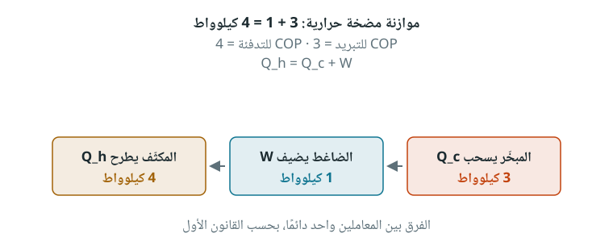

معامل الأداء
Coefficient of Performance
نسبة الحرارة المنقولة إلى الشغل المبذول في مضخة حرارية أو مبرّد؛ تتجاوز الواحد لأن الوظيفة نقل الحرارة لا توليدها، ويحدّها حدّ كارنو بين درجتَي التشغيل.
معامل الأداء COP = الطاقة الحرارية المنقولة ÷ الشغل المبذول. في المبرّد تُقاس الحرارة المسحوبة من الحيّز البارد COP_c = Q_c/W، وفي المضخة الحرارية تُقاس الحرارة المطروحة في الحيّز الساخن COP_h = Q_h/W. لأن Q_h = Q_c + W بحسب القانون الأول، فإن COP_h = COP_c + 1 دائمًا.
تجاوز المعامل الواحد ليس مخالفة للطاقة: المضخة لا تنتج الحرارة، بل تنقلها من الهواء الخارجي أو الأرض إلى الداخل، والشغل المبذول في الضاغط ينقل حرارة أكبر منه. لذلك يقارن المعامل بحدّ كارنو بين الدرجتين لا بالواحد، ويتحدث المهندسون عن كفاءة القانون الثاني: نسبة المعامل الفعلي إلى حدّ كارنو عند الظروف نفسها.
كيف تعمل الظاهرة؟
في دورة الانضغاط البخاري يتبخر المبرّد في المبخّر عند ضغط منخفض فيسحب حرارة من الحيّز البارد. يرفع الضاغط الضغط فيرتفع معه التشبّع، فيدخل المبرّد المكثّف أسخن من الهواء المحيط ويطرح الحرارة عند تكاثفه. ثم يخفض صمام التمدد الضغط فتنخفض حرارة المبرّد دون العمل، ويعود إلى المبخّر.
المعامل يعتمد على ما يسمى رفع الحرارة: الفرق بين درجة التكاثف ودرجة التبخّر. كل كلفن إضافي في الرفع يزيد نسبة الضغط المطلوبة في الضاغط فيزيد الشغل، بينما تبقى الحرارة المنقولة شبه ثابتة، فينخفض المعامل. ولهذا يعمل الجهاز نفسه بمعامل أعلى في الجو المعتدل منه في الصقيع.
العلاقة بالأرقام
حدّ كارنو للمضخة الحرارية COP_h = Th/(Th − Tc). بين 278 و318 كلفن (5 و45 °م) يكون 318 ÷ 40 = 7.95، وهو سقف نظري. ولمكيّف يعمل بين 300 و318 كلفن يكون حدّ التبريد 300 ÷ 18 = 16.7.
مثال موازنة: مبخّر يسحب 3 كيلوواط، وضاغط يستهلك 1 كيلوواط، ومكثّف يطرح 4 كيلوواط؛ فيكون COP_c = 3 وCOP_h = 4، والفرق بينهما واحد بالضبط. والتحويل من وحدة EER الأمريكية يحتاج القسمة على 3.412، لأن Btu/(W·h) تعادل 0.293 واط/واط؛ فجهاز بـEER يساوي 12 يعطي COP 3.52.
مفاهيم متقاربة
الخلط الأول: مساواة COP بالكفاءة. الكفاءة نسبة مخرَج مفيد إلى مدخَل من النوع نفسه ولا تتجاوز الواحد، أما COP فنسبة حرارة منقولة إلى شغل، وقد تبلغ 4 أو 5 بلا خرق لأي قانون. الخلط الثاني: الخلط بين COP وEER وSEER؛ الأول بلا وحدة عند الشروط المعلنة، والثاني بوحدات بريطانية، والثالث متوسط موسمي weighted لا قيمة لحظية.
الخلط الثالث: اعتبار COP الأعلى دائمًا أفضل جهازًا. المعامل يعتمد على الظروف: جهاز بمعامل 3 عند 7 °م و45 °م قد يكون أسوأ من جهاز بمعامل 2.5 عند ظروف أقسى، ولذلك تُقارن الأجهزة عند شروط مرجعية واحدة. والخلط الرابع: تفسير COP_h = COP_c + 1 على أنه كسب طاقة؛ هو نتيجة محاسبة، لا مضاعفة للشغل.
حدود التطبيق
المعامل المعلن يقاس عند شروط ثابتة ولا يشمل عادةً طاقة المراوح ومضخات الماء ودورات إذابة الجليد، وهي تستهلك جزءًا معتبرًا في التشغيل الحقيقي؛ إدخالها في الحساب يخفض المعامل الفعلي. كما أن التشغيل الجزئي المتكرر يخفض الأداء الموسمي عن أداء الحمل الكامل.
لا يعكس COP الأثر الأولي للطاقة: كهرباء بشبكة كفاءتها 40% تعني أن كل وحدة حرارة مسلَّمة تكلّف نحو 2.5 وحدة طاقة أولية عند COP = 1، فالمزايا الحقيقية تظهر عند المقارنة بالطاقة الأولية والانبعاثات. وفي المناخ البارد ينهار المعامل عند الصقيع بسبب إذابة الجليد على المبخّر، وتصبح القيم المعلنة عند 7 °م غير ممثِّلة.

| الكمية | القيمة | المصدر |
|---|---|---|
| حدّ كارنو لمعامل التدفئة بين 278 و318 كلفن | 7.95 بلا وحدة | [1] |
| حدّ كارنو لمعامل التبريد بين 300 و318 كلفن | 16.7 بلا وحدة | [1] |
| معامل تحويل EER إلى COP | 3.412 Btu/(واط·ساعة) | [1] |
| معامل أداء التدفئة في المثال: 4 كيلوواط حرارة مقابل 1 كيلوواط شغل | 4 بلا وحدة | [2] |
المصادر
- 1 Refrigerators and Heat Pumps — OpenStax, University Physics Volume 2. openstax.org/books/university-physics-volume-2/pages/4-3-refrigerators-and-heat-pumps · اطُّلع عليه 2026-11-16
- 2 Heat pumps — International Energy Agency. www.iea.org/energy-system/buildings/heat-pumps · اطُّلع عليه 2026-11-16
استشهد بهذا المصطلح
الصيغتان مبنيتان من بيانات الصفحة نفسها: العنوان والتاريخ ورابط النسخة المنشورة.
معامل الأداء — Coefficient of Performance. (2026). ديوان المعرفة — انفراد. https://infiradev.com/diwan/terms/coefficient-of-performance.html
@misc{coefficient-of-performance2026,
title = {معامل الأداء},
titleaddon = {Coefficient of Performance},
howpublished = {{ديوان المعرفة — انفراد} — مرجع علمي عربي},
year = {2026},
url = {https://infiradev.com/diwan/terms/coefficient-of-performance.html},
urldate = {2026-11-16},
note = {مراجعة علمية: مراجعة آلية — ديوان المعرفة (روابط المصادر + عقد المحتوى + وجود الرسم) 2026-11-16}
}
راجعه: مراجعة آلية — ديوان المعرفة (روابط المصادر + عقد المحتوى + وجود الرسم) 2026-11-16 · 2026-11-16 · آخر تحديث 2026-11-16